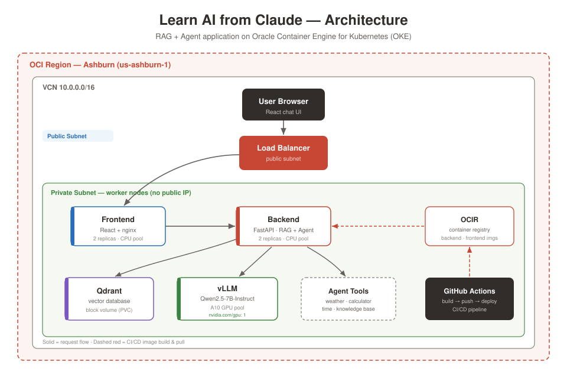

From a local script to a GPU-served AI app on Kubernetes.
I spent most of my career as a full-stack software engineer, then moved into sales solutions engineering. This project was how I rebuilt the end-to-end muscle — system design through deployment — for the AI era. Every layer here I built and debugged myself.
00 Why I built this
The honest starting point: I wasn't sure whether working in AI meant going back to full-time software development.
As a software engineer I owned the whole chain — system design, data modeling, business objects, middleware APIs, and the single-page apps that consumed them. That end-to-end ownership was the part I missed. Skilling up on AI in scattered pieces never gave me the same confidence.
So instead of another course, I built one complete system from scratch: a retrieval-augmented chat app with an agent, running on real cloud infrastructure I provisioned myself. The goal was muscle memory — the kind you only get by shipping something with real stakes and debugging it when it breaks. It broke plenty. That was the point.
01 Architecture
A RAG + agent application on Oracle Container Engine for Kubernetes, serving an open LLM on an A10 GPU.

A question flows from the browser through an OCI load balancer to the FastAPI backend, which embeds it, searches Qdrant for relevant document chunks, injects them as context, and asks the LLM to answer — grounded in the source material with citations. Agent mode adds autonomous tool-calling. Worker nodes sit on a private subnet with no public IPs; only the load balancer is exposed.
w1 FastAPI + local LLM
Get a local model answering through code I wrote — not a chat box.
The first week was about making the environment feel like home. FastAPI stands in for .NET Web API — same controller-and-route mental model, different syntax. Ollama runs an open model entirely on the laptop, exposing a REST API the backend calls. The deliverable was a streaming /chat endpoint.
w2 Embeddings + Qdrant
The week the whole thing clicked: meaning as math.
An embedding is just a vector that represents meaning. Two similar sentences land close together; unrelated ones don't. Cosine similarity measures the distance. Once that lands, semantic search stops being magic — it's a query against a vector database, the same shape as a SQL WHERE clause, but by meaning instead of exact match.
Running this printed 0.67 for a related pair and 0.02 for an unrelated one. That gap is the entire basis of retrieval — set a threshold around 0.3 and you have a working relevance filter.
w3 Full RAG + React UI
Wire retrieval and generation into one grounded answer, then put a face on it.
RAG is the assembly of the previous two weeks: embed the question, retrieve the closest chunks, inject them into the prompt as context, and ask the model to answer using only that context. The result is grounded — it cites sources and admits when it doesn't know, instead of hallucinating. A React chat UI streams the answer back token by token.
w4 Agents + tool calling
The app stops just answering and starts doing.
Tool calling is where the model decides to invoke functions I defined — get the time, run a calculation, hit a live weather API, or search the knowledge base. This maps directly onto the API-integration work from my engineering days, except the model is now the orchestrator deciding which integration to call based on intent. I added a dedup guard so it wouldn't re-call the same tool, and conversation memory so multi-turn context works.
Ollama and vLLM express tool calling differently — Ollama's Python library versus vLLM's OpenAI-format API. I isolated the difference behind two small helpers so the same agent loop runs against either backend with just an env-var switch. The tool schemas were already in OpenAI format, so they ported unchanged.
w5 Cloud deployment
The week my infrastructure background became the advantage.
Everything to here was application logic. Week five was pure infrastructure: containerize the app, provision an OKE cluster with Terraform, serve the model on an A10 GPU with vLLM, and automate the whole thing through GitHub Actions. Corporate policy blocked Docker on my laptop — so images build in the pipeline instead, which is arguably the more correct pattern anyway.
The portable design paid off here: the same backend image runs locally against Ollama and in-cluster against vLLM, switched by a single environment variable.
→ Deploy it yourself
The entire stack is one-click deployable into your own OCI tenancy.
Because the infrastructure is fully described in Terraform and packaged for OCI Resource Manager, anyone can deploy it. Fill in a form, pick a compartment, toggle the GPU, and go. Or run it locally:
enable_gpu = false unless actively testing inference, and tear it down when done.
→ Stack & endpoints
What runs where, and the API surface.
Backend endpoints
Infrastructure (Terraform-managed)
- VCN with public/private subnets, NAT + service gateways
- IAM dynamic group + policies for OKE
- OCIR private repositories for images
- OKE cluster + CPU nodepool (E5.Flex)
- Toggleable A10 GPU nodepool for vLLM
- In-cluster image pull secret
! Gotchas & fixes
The real education. None of these were in any tutorial — each cost real debugging time.
OKE nodes use CRI-O, which refuses ambiguous short names like qdrant/qdrant:latest. Fully qualify every public image.
Images were tagged iad.ocir.io but the pull secret authenticated against us-ashburn-1.ocir.io. Same region, different hostname — so pulls fell back to anonymous and failed with "Anonymous users are only allowed read access on public repos." The secret's registry host must match the image tag host exactly.
Setting boot_volume_size_in_gbs = 200 provisions a bigger disk, but the filesystem stays at the default ~37GB — so vLLM's image + model download got evicted for low ephemeral storage. A cloud-init step must grow the filesystem onto the larger volume with oci-growfs -y.
Kubernetes auto-injects a VLLM_PORT variable for the vLLM service (a tcp://… URI), which collides with vLLM's own config var of the same name. vLLM crashed parsing the URI as a port. Fix: set VLLM_PORT: "8000" explicitly in the pod env.
A Deployment with a ReadWriteOnce volume briefly runs two pods during a rolling update — and they deadlock fighting over the single-attach volume. Set strategy: Recreate so the old pod releases the volume before the new one starts.
The backend requested a model name vLLM wasn't serving, so vLLM returned an error payload with no choices key and the client crashed. Align the requested model with the served one, and guard the parse so a vLLM error surfaces clearly instead of a cryptic KeyError.
VM.Standard.E4.Flex failed to pair with the OL8 node image ("shape and image are not compatible") even though the image name was correct. Switching to VM.Standard.E5.Flex resolved it — the issue was shape availability, not the image.
Private-subnet workers failed to register with the control plane until the security lists allowed the specific cross-subnet ports OKE needs — 6443 and 12250 (workers → API), 10250 (API → kubelet), plus the ICMP path-MTU rule.
→ Teardown
The whole point of infrastructure as code: it all comes back from one command.
Because every resource is Terraform-managed, teardown is complete and clean — no orphaned load balancers quietly billing, no manual console cleanup. And it all rebuilds from terraform apply whenever I want it back.
A learning project — the muscle memory was the deliverable.